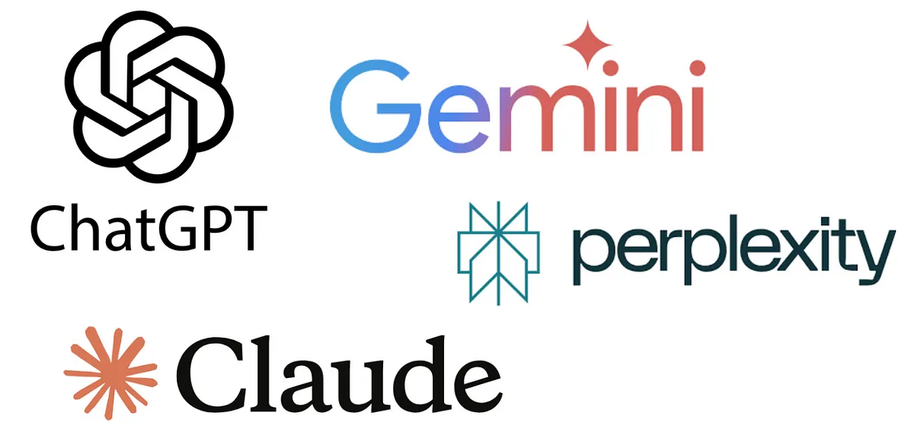
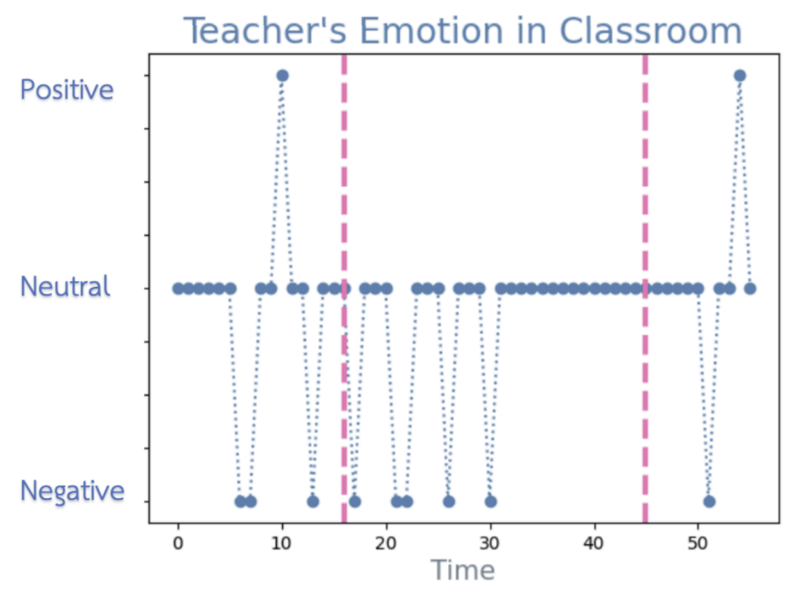
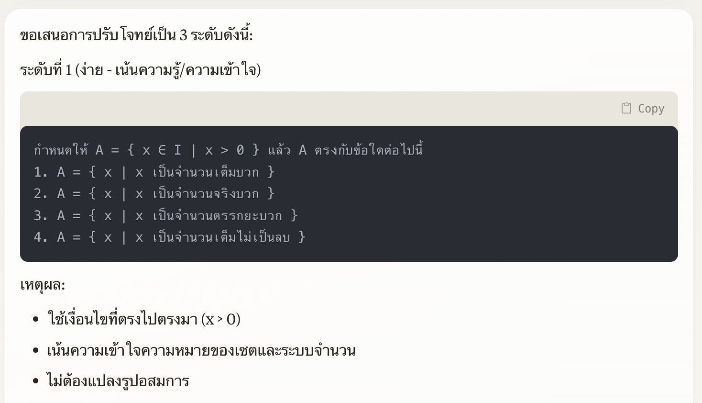
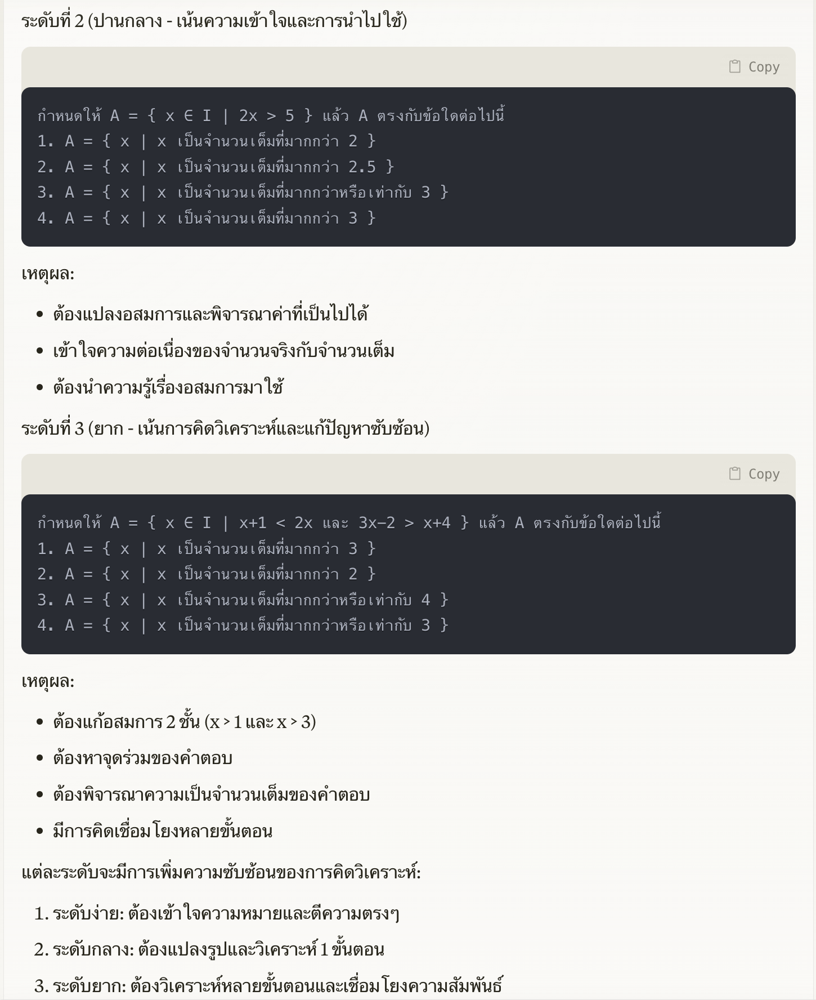
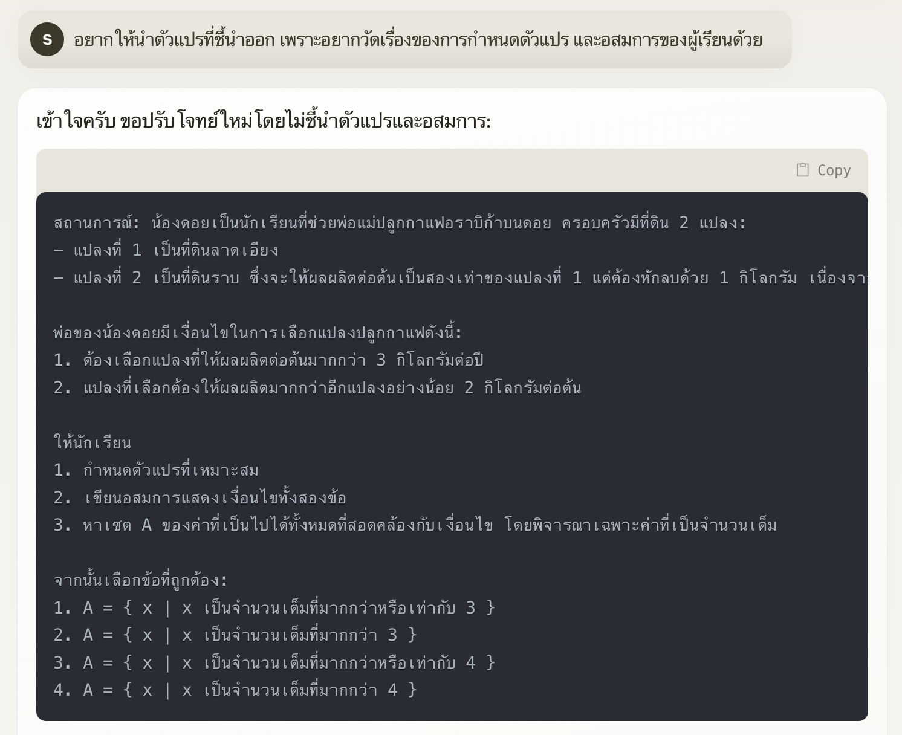
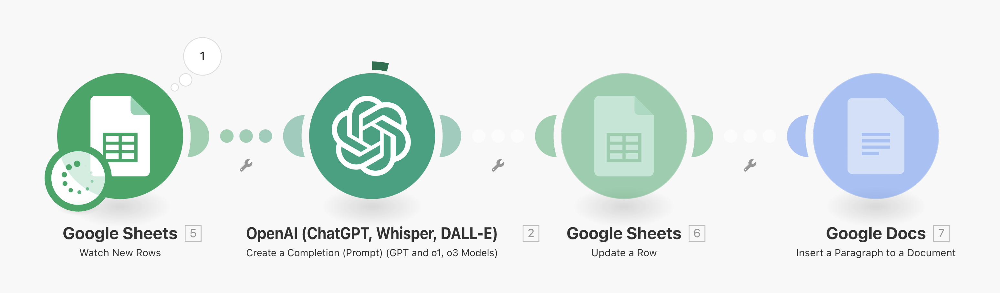
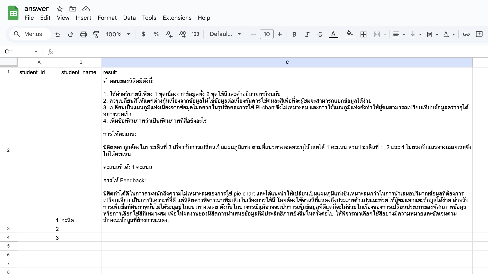
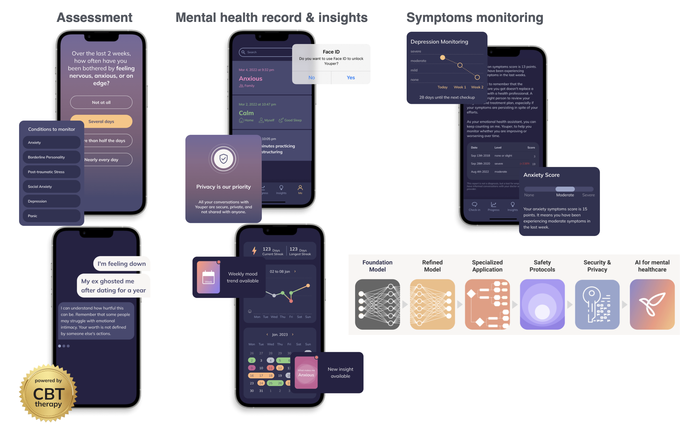
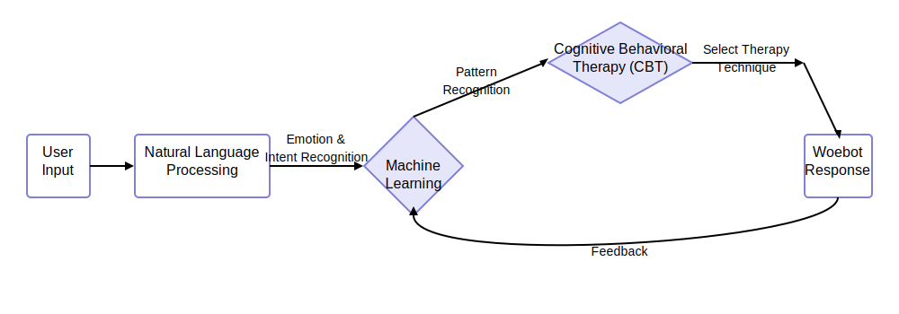

Rows: 367
Columns: 10
$ Student_id <int> 1, 2, 3, 4, 5, 6, 7, 8, 9, 10, 11, 12, 13, 14, 15, 1…
$ Department <chr> "ไทยสังคม", "ภาษาอังกฤษ", "การศึกษาปฐมวัย", "การศึกษาปฐมวั…
$ StatKnowledge <dbl> 57.79762, 42.79762, 53.51852, 51.29630, 52.40741, 29…
$ Concepts <dbl> 57.14286, 57.14286, 75.00000, 58.33333, 58.33333, 25…
$ Interpret <dbl> 56.25000, 31.25000, 55.55556, 55.55556, 38.88889, 33…
$ ChooseMethod <dbl> 60, 40, 30, 40, 60, 30, 20, 30, 70, 50, 30, 20, 50, …
$ StatSubmitTime <dbl> 156.41160, 145.08406, 145.92416, 128.12002, 139.8148…
$ StatPercentSubmit <dbl> 66.66667, 100.00000, 100.00000, 100.00000, 100.00000…
$ StatLearnPerform <dbl> 95.00000, 73.33333, 82.50000, 73.75000, 78.75000, 78…
$ StatCheatBehav <dbl> 0.9143358, 0.5934895, 1.0000000, 0.5159800, 0.641961…AI-Powered Data-Driven Classroom:
Teaching and Learning Enhancement
2025-03-21
Paradiam Shift
AI & Data-Driven → Accelerated Discovery

Education 4.0
“A Global Framework for Shifting Learning Content and Experiences Towards the Needs of the Future”
ปรับตัวให้ยืดหยุ่น เฉพาะบุคคล
ใช้เทคโนโลยีเป็นเครื่องมือ
พัฒนาทักษะที่ตอบโจทย์อนาคต

Why’s Data-Driven Classroom

Why’s Data-Driven Classroom
Do you “speak data”?


Data-Driven Classroom

Data-Driven Classroom

ใช้ข้อมูลย้อนหลัง 10 ปีเพื่อสร้างตัวชี้วัดกว่า 800 ตัวสำหรับระบุความเสี่ยงของนักศึกษา
อัปเดตข้อมูลทุกคืนและแจ้งเตือนที่ปรึกษาเมื่อพบว่านักศึกษาอาจมีปัญหา
ส่งผลให้เกิดการแทรกแซงจากที่ปรึกษามากกว่า 200,000 ครั้ง
อัตราการสำเร็จการศึกษาเพิ่มขึ้น 67% ในช่วงหกปีที่ผ่านมา
ช่องว่างความสำเร็จระหว่างกลุ่มเสี่ยง (เช่น นักศึกษาผิวดำ ฮิสแปนิก และรายได้น้อย) กับนักศึกษาโดยรวมถูกขจัดออกไป
GSU กลายเป็นมหาวิทยาลัยที่มอบปริญญาตรีให้กับนักศึกษาผิวดำมากที่สุดในสหรัฐฯ

Artificial Intelligence (AI)
Intentional Assessment
การวัดผลที่มีเป้าหมายชัดเจน มีการออกแบบเพื่อเก็บข้อมูลสำคัญที่สามารถสะท้อนคุณลักษณะสำคัญของผู้เรียน เช่น พฤติกรรม ผลลัพธ์ หรือความต้องการ ได้อย่างตรงจุด เพื่อให้สามารถนำไปสู่การวิเคราะห์และปรับปรุงการเรียนรู้ให้มีประสิทธิภาพยิ่งขึ้น
Purpose-Driven
-
Process-Enhanced
Nested Assessment
Creative/Authentic Tasks
Multi-Model Assessment
Personalized
Proactive Prevention


Test/Assessment Analysis & Generator
Rubric Generator
Adaptive Assessment Design/Generator
Automated Essay Scoring (AES)
Facial Recognition/Emotion Detection
Behavioral Monitoring
Voice/Speech Analysis

Rubric Generator

Differentiated Problems



Differentiated Problems


Automated Scoring + Feedback
Gen AI สามารถส่งไฟล์ผลการประเมินและการให้ feedback กลับมาเพื่อนำไปใช้ต่อได้

Automate Essay Scoring
### prompt 1
หากจะพัฒนาทัศนภาพข้อมูลข้างต้นให้ดียิ่งขึ้น นิสิตคิดว่าควรพัฒนา/ปรับเปลี่ยนทัศนภาพข้อมูลในประเด็นใดบ้าง
แนวทางเฉลย:
1. ทัศนภาพข้อมูลนี้ใช้ pie chart แทนปริมาณที่เป็นคะแนนเฉลี่ยรายวิชาคณิตศาสตร์ที่จำแนกตามกลุ่มนักเรียน ซึ่งไม่เหมาะสม ควรใช้ bar chart หรือทัศนภาพอื่นที่ใช้นำเสนอปริมาณไม่ใช่สัดส่วน ---> Untrustworthy
2. ใช้จานสีแบบ sequential แทนที่จะเป็น qualitative palette แทนกลุ่มนักเรียน ---> not accessible
ดังนั้นประเด็นการพัฒนาปรับเปลี่ยนให้ดีขึ้นต้องตอบ 2 ประเด็น
1. เปลี่ยนทัศนภาพข้อมูลให้เป็นแผนภูมิแท่ง หรือแผนภูมิอื่นที่ใช้นำเสนอปริมาณ/เปรียบเทียบข้อมูล ไม่ใช่สัดส่วน
2. เลือกจานสีแบบ qualitative palette ให้เหมาะกับประเภทตัวแปรสไตล์การเรียนรู้
จำไว้ก่อน
### prompt 2
ไฟล์นี้เป็นผลการตอบคำถามแบบอัตนัยรายคนของนักเรียนในข้อสอบข้างต้น ช่วยตรวจความถูกต้องโดยให้คะแนนเป็นรายคนดังนี้
2 คะแนน ตอบถูกต้องทั้งสองประเด็น
1 คะแนน ตอบถูกต้อง 1 ประเด็น
0 คะแนน ไม่ถูกต้องเลย
แล้วสร้างผลการตรวจเป็นคอลัมน์ที่ 5 แล้วส่งไฟล์กลับมาหน่อย
Adaptive Testing
Prompt engineering + Context injection
สามารถปรับแต่ง GPT ให้มีความเฉพาะและเหมาะกับการทำงานในแต่ละบริบท
ไม่จำเป็นต้องเขียน code

Data Analytics/ Learning Analytics
ทำความเข้าใจผู้เรียน
สำรวจผู้เรียนที่มีความโดดเด่น
สำรวจ/วิเคราะห์ปัจจัยที่มีความสัมพันธ์กับผลลัพธ์ที่สนใจ เช่น ผลการเรียน การมาเรียน
สร้างโมเดลทำนายผลลัพธ์ที่สนใจจากข้อมูลในอดีต
กำหนด Intervention ที่เหมาะสมและสอดคล้องกับผู้เรียนเฉพาะกลุ่ม/บุคคล
พัฒนามาตรการเชิงรุกเพื่อปรับปรุงผลลัพธ์ในอนาคต

ควรให้เวลาทำงานแก่ผู้เรียนมากขึ้นหรือไม่?
คลิกเพื่อดูรายละเอียด
1. จากข้อมูลที่ให้ขอให้สร้าง histogram เพื่อนำเสนอการแจกแจงของ StatSubmitTime หน่อย ข้อมูลดังกล่าวเป็นจำนวนชั่วโมงโดยเฉลี่ยที่นักเรียนใช้ในการทำงานที่ได้รับมอบหมาย ให้สร้างเส้นตรง x = 168 เป็นเส้นประไว้ด้วยเพื่อเป็นจุดอ้างอิงระยะเวลา deadline ของการส่งงานแต่ละชิ้น (7 วัน)
2. ช่วยคำนวณสถิติพื้นฐานของตัวแปร StatSubmitTime หน่อย ได้แก่ ความถี่ ค่าเฉลี่ย ส่วนเบี่ยงเบนมาตรฐาน ค่าต่ำสุด Q1, Q2, Q3 และ ค่าสูงสุด โดยจำแนกตามกลุ่มของนักเรียนที่ส่งงานตรงเวลาและส่งงานช้า
3. มีนักเรียนเสนอว่าควรขยายเวลาการส่งงานจาก 7 วันเป็น 10 วัน ทั้งนี้เป็นเพราะเชื่อว่าการมีเวลามากขึ้นจะทำให้งานดีขึ้น และผลการเรียนจะดีขึ้นด้วย ผมอยากวิเคราะห์ข้อมูลเพื่อตรวจสอบสมมุติฐานนี้ ทำยังไงได้บ้างจากข้อมูลที่มี ลองเสนอทางเลือกหน่อย
4. ลองสร้างแผนภาพการกระจาย โดยที่ให้แกน y เป็น StatKnowledge และ แกน x เป็น StatSubmitTime พร้อมทั้งสร้าง smooth line regression เพื่อแสดงแนวโน้มความสัมพันธ์ด้วย
5. ขอให้ hover label ใน scatter plot แสดง student_id ด้วย และปรับแกน x ให้เป็นจำนวนเต็ม ไม่มีจุดทศนิยมด้วย
6. ขอ scatter plot แบบนี้แต่เปลี่ยนแกน y เป็น StatPercentSubmit
7. ให้แกน y เป็น StatPercentSubm เหมือนเดิม แต่ลองปรับแกน x ให้เป็นตัวแปรจัดประเภทกำหนด cutoff ที่ 75, 125 และ 168 แล้วปรับแผนภาพเป็น boxplot แทน

AI Automation
เราสามารถสร้าง automate workflow ที่มี AI สนับสนุน เรียกว่า AI Automation



AI Automation

https://woebothealth.com/(2025)

https://www.youper.ai/how-it-works

🎯 Transforming to Data-Driven Organization
วางโครงสร้าง Data Management & Governance → ทำให้ข้อมูลมีมาตรฐาน
สร้าง Data Culture ในองค์กร → ให้พนักงานมีทักษะและความเชื่อมั่นในการใช้ข้อมูล
เริ่มใช้ Data-Driven Decision Making → นำข้อมูลมาใช้ตัดสินใจจริง
นำเทคโนโลยีมาสนับสนุน → ทำให้การใช้ข้อมูลมีประสิทธิภาพสูงสุด

https://www.libentium.com/data-driven-trasformation